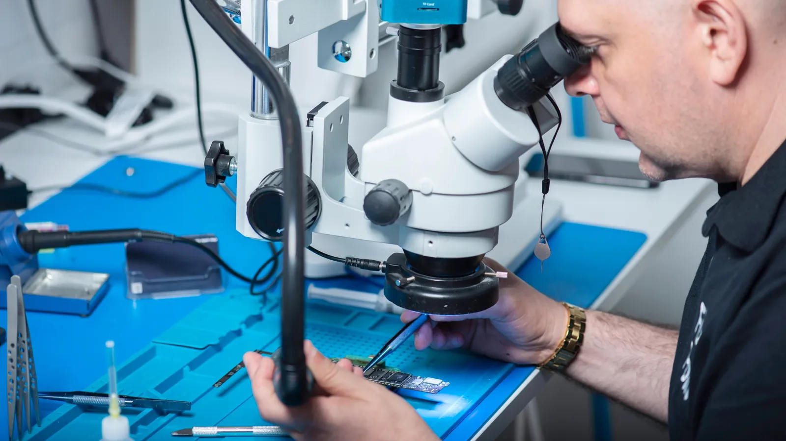

Chip designers are handing agents the slow work of tracing a failure back to its cause. Most support teams still close the same ticket every week and never ask where it comes from.

Synopsys and Microsoft announced autonomous agent workflows for chip design, now available for evaluation on Microsoft Discovery. The one worth your attention is debug closure. When a chip design fails verification, a set of agents traces the failure back to the part of the design that caused it and pushes the fix through validation.
Synopsys says early evaluations cut debug cycle time by 25 to 40 percent, which it puts at weeks of engineering effort saved. AMD is evaluating the workflows for its next products. Those are vendor numbers from early trials, so treat them as a direction and wait for your own.
Most people outside semiconductors can skip the chip details. What carries over is the kind of work being handed to agents. This is a long investigation rather than a single answer to a single prompt: gather the evidence, form a theory, test it, and report what broke and why.
Your support operation has its own version of a failed verification run, and it shows up as repeat contact. The same billing confusion, the same delivery question, the same password reset that fails for one group of customers. Each ticket gets answered and closed. The cause that produced it stays where it was, so next week brings the same tickets again.
That is expensive in a way the dashboard hides. Handle time looks fine, and the backlog looks under control. But you are paying to answer a question that a fixed invoice template or a clearer delivery email would have stopped at the source. And every customer who has to ask is a little less patient the next time.
A support agent that answers faster makes this worse in one respect. It gets so good at closing the ticket that nobody feels the pain that used to push someone to go and fix the cause.
The Synopsys pattern splits the job between agents with different duties. One finds the failures. Another works out what they have in common, and a third proposes the fix. You can build the same split over a support queue, and none of it needs to touch a customer.
In CX-Builder that is an agent that runs on a schedule rather than in a chat window. It reads the week's closed tickets, groups them by what the customer was actually asking, and checks each large group against your policies, product documents and recent changes. Then it writes a short report for a person: this cluster of 300 tickets started the week the new invoice layout shipped, here are five examples, and here is the line on the invoice that customers keep misreading.
The output is a finding with evidence attached, and a human decides what to do with it. The agent never edits the invoice or rewrites the delivery email itself. It does the slow part, the reading and grouping and cross-checking, and leaves the call to the person who owns the process.
A scheduled agentflow pulls closed tickets from your helpdesk through its connector and embeds them into a vector store, so similar complaints land near each other even when customers phrase them differently. Then a second agent takes the largest clusters and retrieves from a separate store holding your policies, release notes and templates, looking for a change that lines up with when each cluster started. A structured output step turns each finding into a fixed shape (cluster size, start date, suspected cause, sample tickets), and a human-in-the-loop step routes it to the owner for a yes or no before anything becomes a work item.
Keep the first version read-only. Run it for a month and count how many of its findings a person agreed with. That number tells you whether it has earned more scope.
Pull last quarter's ten most common ticket reasons and ask, for each one, whether anyone has been asked to make it stop. If the honest answer is mostly no, the next agent you build should investigate the queue instead of answering it.